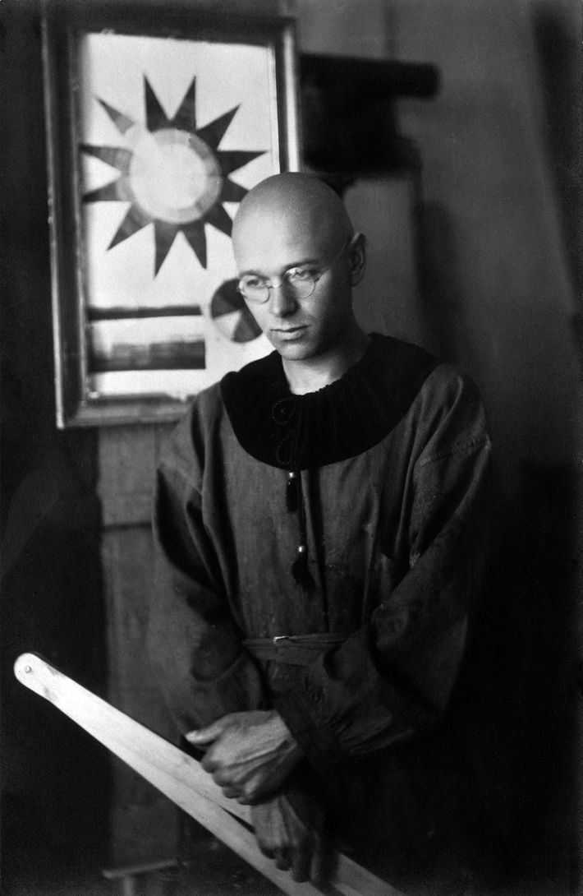
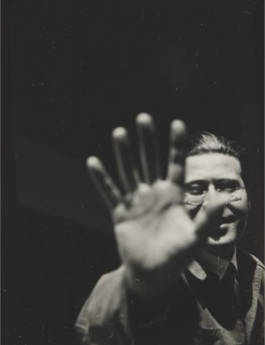

1919 JOHANNES ITTEN
1923
Paula Stockmar, retrato de Johannes Itten con la cabeza rapada y vestido de monje. Detrás de él, la estrella de color que utilizada en sus enseñanzas de la Bauhaus, 1920.
Itten-Archiv Zürich | © VG Bild-Kunst, Bonn 2018.
El objetivo del curso preliminar de Itten fue estimular las capacidades creativas del alumnado. Sus ideas se relacionaron con la etapa expresionista de la primera Bauhaus y su utopía social sobre la unidad de arte y vida.
Sus clases se dividían en 3 partes:
- Estudios sobre la naturaleza y los materiales (teoría de color y forma)
- Análisis de antiguos maestros
- Dibujo del desnudo
Cada clase comenzaba con ejercicios de gimnasia, concentración, respiración y ritmo para relajar el cuerpo, provocar sensaciones de caos y armonía e inspirar la imaginación y la originalidad.
El estudio del ritmo era especialmente importante, ya que suponía la expresión de la unidad entre cuerpo y alma. Algunos ejercicios para fomentar el desarrollo del ritmo fueron el dibujo acompañado de música (intentando transmitir las sensaciones de la música al pintar) o el dibujo a dos manos de manera simultánea.
1923 MOHOLY-NAGY
1928
Lucia Moholy, retrato de László Moholy-Nagy, 1925.
Thomas Walther Collection © 2014 Artists Rights Society (ARS), New York | VG Bild-Kunst Bonn
Las clases de Moholy-Nagy a partir de 1923 orientaron el curso preliminar hacia lo funcional y lo racional, alejándolo de la característica espiritualidad de Itten.
Dado que Moholy-Nagy estableció como elemental al arte su propia materialidad, su enseñanza se basó esencialmente en la observación de la naturaleza de los colores, las superficies, las formas, el material, la función, la proporción y el espacio.
Más que en estimular la individualidad de los estudiantes, el curso de Nagy se centró en introducirlos a la enseñanza de conocimientos técnicos como la estática, la dinámica o el equilibrio, aspectos fundamentales de la construcción técnica.
1928 JOSEF ALBERS
1933

Josef Breitenbach, retrato de Josef Albers, 1944.
© Josef and Yaye Breitenbach Charitable Foundation
La pedagogía de Albers se convirtió en una especie de síntesis entre la vertiente más “espiritual” y “práctica” de Itten y Nagy.
El punto central de sus clases era la búsqueda y estimulación de la creatividad y la improvisación en cualquier objeto de la vida cotidiana. Uno de sus ejercicios, por ejemplo, consistía en entregar a los alumnos papeles de periódico. Atendiendo a las características del periódico como materia prima, el objetivo del ejercicio era reconfigurarlo para convertirlo en otra cosa, estimulando con ello el pensamiento constructivo.